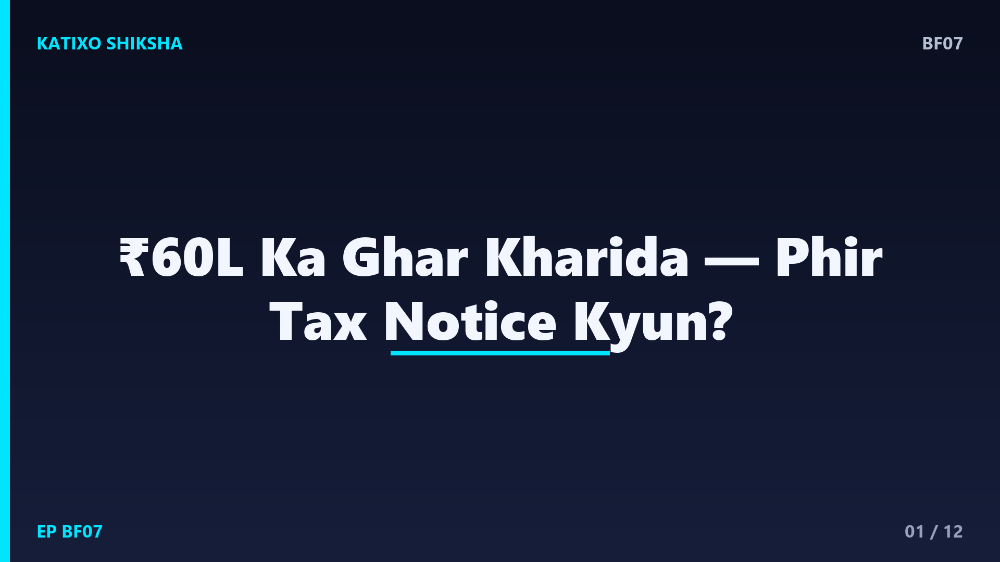
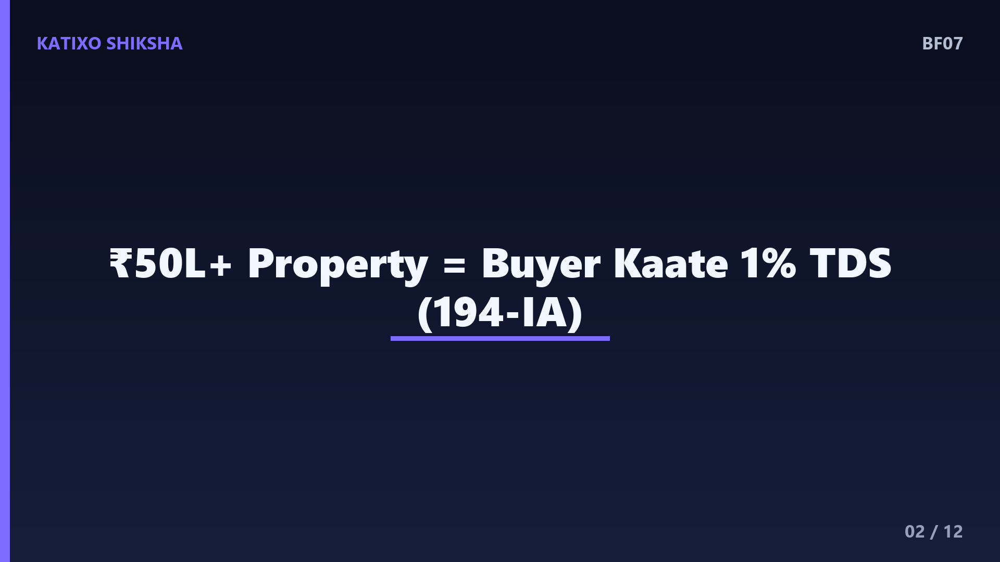
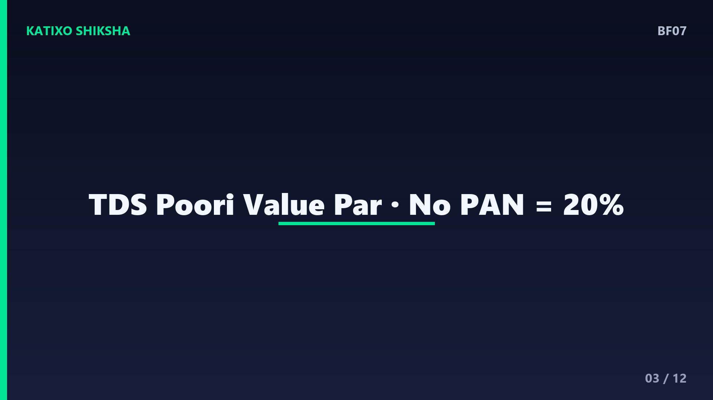
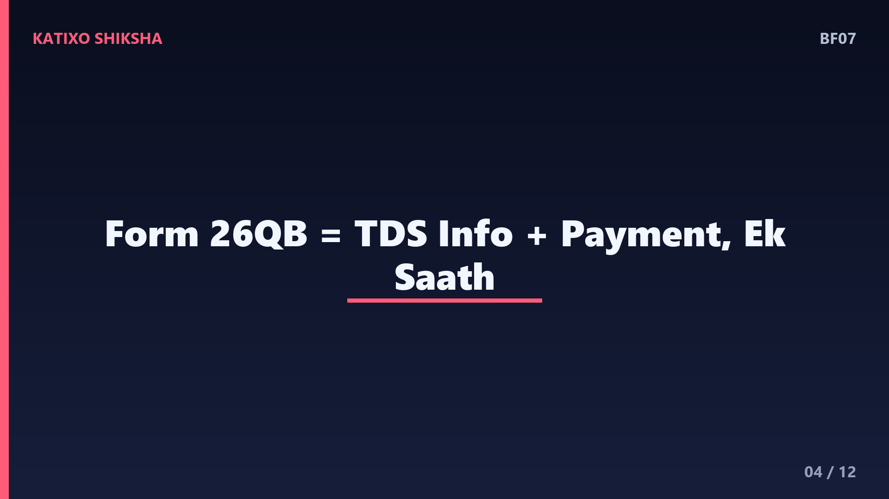
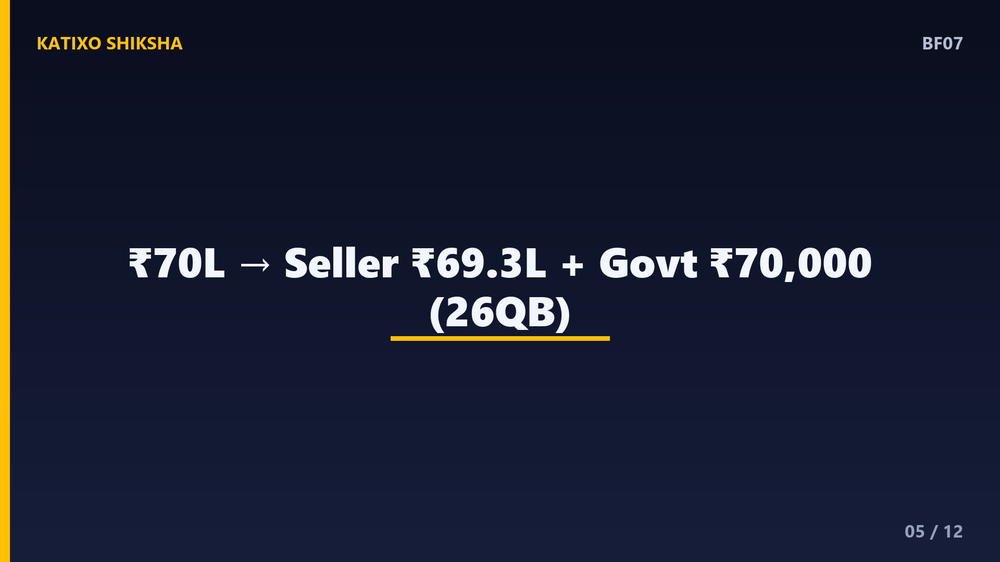
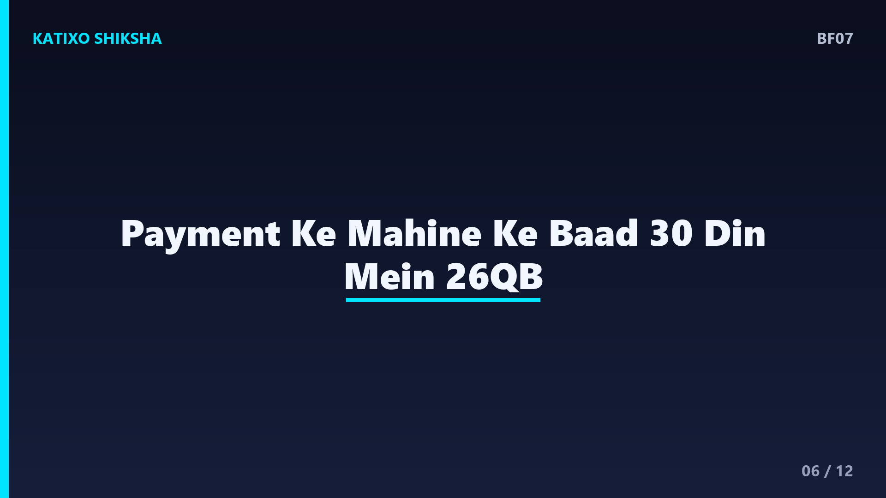
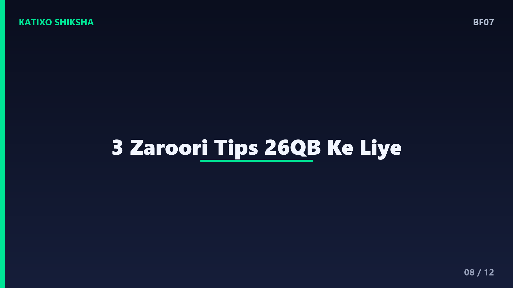
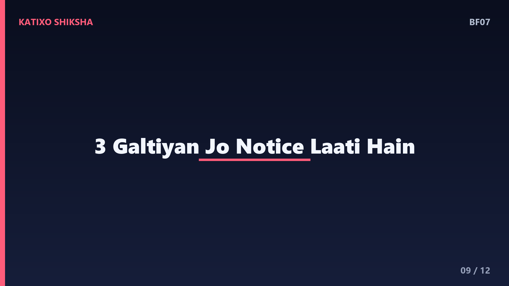
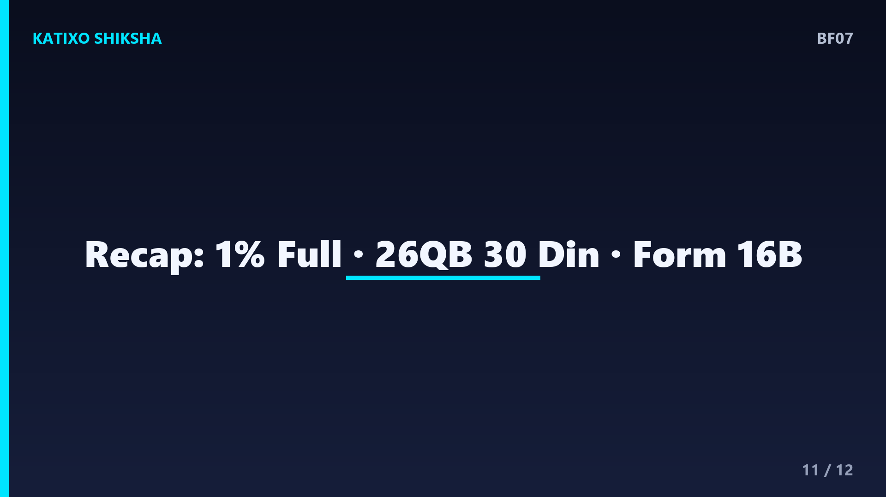

BF07 — 50 Lakh se upar Property par TDS aur Form 26QB?

Slide 1दोस्तों, मान लीजिए आपने जीवन भर की बचत से एक घर खरीदा, कीमत है 60 लाख रुपये। आप पूरी रकम seller को दे देते हैं और खुश होते हैं। पर कुछ महीने बाद Income Tax का notice आ जाता है, क्योंकि आप एक ज़रूरी काम भूल गए, property पर TDS काटना। नमस्ते, आपका स्वागत है Katixo KhojLab में। आज हम बहुत आसान Hinglish में समझेंगे कि 50 लाख से ऊपर की property पर TDS कैसे काटा जाता है और Form 26QB क्या होता है। चलिए शुरू करते हैं।

Slide 2सबसे पहले rule समझ लीजिए। Income Tax Act की Section 194-IA के तहत, अगर किसी property यानी ज़मीन या building की कीमत 50 लाख रुपये या उससे ज़्यादा है, तो खरीदार यानी buyer को seller को payment करते समय 1 प्रतिशत TDS काटना ज़रूरी है। ध्यान दीजिए, ये जिम्मेदारी seller की नहीं, बल्कि buyer की होती है। यानी जो घर खरीद रहा है, उसे ही ये TDS काटकर सरकार के पास जमा करना होता है। यही सबसे important बात है जो ज़्यादातर लोग नहीं जानते।

Slide 3अब एक ज़रूरी detail। TDS पूरी कीमत पर लगता है, सिर्फ 50 लाख से ऊपर वाले हिस्से पर नहीं। यानी अगर property 60 लाख की है, तो 1 प्रतिशत TDS पूरे 60 लाख पर लगेगा, ना कि सिर्फ 10 लाख पर। एक और बात, अगर seller के पास PAN नहीं है, तो TDS की दर 1 प्रतिशत की जगह सीधे 20 प्रतिशत हो जाती है, जो बहुत भारी है। इसलिए दोस्तों, deal करते समय seller का valid PAN ज़रूर ले लें, वरना बहुत बड़ा नुकसान हो सकता है।

Slide 4अब जानिए Form 26QB क्या है। दोस्तों, Form 26QB एक online challan-cum-statement है, यानी एक ही form जिसमें आप TDS की जानकारी भी देते हैं और payment भी करते हैं। जब buyer property पर 1 प्रतिशत TDS काटता है, तो उसे यही Form 26QB भरकर वो रकम सरकार के पास जमा करनी होती है। ये form Income Tax के e-filing portal पर online भरा जाता है। आसान भाषा में कहें तो, 26QB ही वो रास्ता है जिससे काटा हुआ property TDS सरकार तक पहुँचता है।

Slide 5अब एक concrete example से पूरी process देखते हैं। मान लीजिए property की कीमत है 70 लाख रुपये। चूँकि ये 50 लाख से ऊपर है, इसलिए 194-IA लागू होगा। 1 प्रतिशत TDS बनता है 70,000 रुपये। तो buyer को seller को सिर्फ 69 लाख 30 हज़ार रुपये देने हैं, और बचे 70,000 रुपये Form 26QB के ज़रिए सरकार के पास जमा करने हैं। यानी कुल payment वही 70 लाख रहता है, बस उसमें से 70,000 रुपये सीधे seller को ना जाकर सरकार के पास TDS के रूप में जमा होते हैं।

Slide 6अब timeline का ध्यान रखिए, ये बहुत ज़रूरी है। काटा गया TDS, जिस महीने में payment किया गया उसके अंत से 30 दिन के भीतर Form 26QB भरकर जमा करना ज़रूरी है। अगर आप installment में payment कर रहे हैं, तो हर installment पर अलग से 1 प्रतिशत TDS काटना और हर बार 26QB भरना होता है। देरी करने पर interest और late fee लगती है। इसलिए दोस्तों, payment और 26QB को साथ-साथ plan करें, बाद में टालने की गलती ना करें।
Slide 7अब बात seller के फायदे की। जब buyer TDS जमा कर देता है, तो उसके बाद उसे Form 16B नाम का एक TDS certificate generate करना होता है, जो वो seller को देता है। ये certificate seller के लिए सबूत है कि उसकी ओर से 1 प्रतिशत tax पहले ही सरकार के पास जमा हो चुका है। Seller इसे अपनी income tax return में claim कर सकता है। यानी ये पैसा seller का ही है, बस advance में सरकार के पास जमा हुआ है। 16B देना buyer की जिम्मेदारी है।

Slide 8अब practical tips। Tip नंबर एक, इस process में TAN नंबर की ज़रूरत नहीं होती, सिर्फ buyer और seller दोनों का PAN चाहिए, ये याद रखें। Tip नंबर दो, अगर कई buyer या कई seller हैं, जैसे पति-पत्नी जॉइंट में घर ले रहे हैं, तो हर combination के लिए अलग Form 26QB भरना पड़ता है। Tip नंबर तीन, 26QB भरते समय सारी details, जैसे PAN, address और amount, बहुत ध्यान से check करें, क्योंकि गलती सुधारना झंझट भरा होता है।

Slide 9अब common गलतियाँ जिनसे बचना है। पहली, बहुत buyer सोचते हैं कि home loan लिया है तो bank खुद TDS काट देगा, ये गलत है, जिम्मेदारी फिर भी buyer की ही है। दूसरी, कई लोग सिर्फ 50 लाख से ऊपर वाले हिस्से पर TDS काटते हैं, जबकि TDS पूरी value पर लगता है। तीसरी, deadline भूल जाना। दोस्तों, ये तीनों गलतियाँ notice और penalty का कारण बनती हैं, इसलिए शुरू से ही सही तरीके से करें।
Slide 10एक और ज़रूरी बात, agriculture land पर ये rule लागू नहीं होता। Section 194-IA खेती की ज़मीन को छोड़कर बाकी immovable property, जैसे flat, house, plot या commercial property पर लगता है, बशर्ते कीमत 50 लाख या उससे ज़्यादा हो। और हाँ, ये TDS एक अतिरिक्त खर्च नहीं है, ये seller के tax का ही हिस्सा है जो आप उसकी ओर से जमा कर रहे हैं। इसलिए घबराने की ज़रूरत नहीं, बस process को सही ढंग से follow करना है।

Slide 11चलिए quick recap, तीन points में। एक, 50 लाख या उससे ज़्यादा की property पर buyer को Section 194-IA के तहत 1 प्रतिशत TDS काटना ज़रूरी है, और ये पूरी value पर लगता है। दो, ये TDS Form 26QB भरकर, payment के महीने के अंत से 30 दिन में सरकार के पास जमा करना होता है। तीन, इसके बाद buyer seller को Form 16B certificate देता है, और याद रखें, seller का PAN ना होने पर दर 20 प्रतिशत हो जाती है।
Slide 12तो दोस्तों, अब आप जान गए कि property पर TDS और Form 26QB कैसे काम करता है। घर खरीदना जीवन का बड़ा फैसला है, और ये एक छोटा सा सही कदम आपको बड़े notice और penalty से बचा सकता है। बड़ी deal में किसी अच्छे CA या tax expert की मदद ज़रूर लें। Aisi aur simple finance explainers ke liye Katixo KhojLab ko subscribe karein! Video अच्छी लगे तो like और share करें। Ye general educational info hai, tax advice nahi. मिलते हैं अगली episode में।